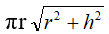

Лабораторная работа №2
Реализация программного взаимодействия JavaScript с HTML документами
Написать программу с использованием JavaScript для выполнения на web-странице вычислений по данным, вводимым пользователем.
- 1) Рассчитать для окружности радиуса r боковую поверхность прямого кругового конуса высотой h; длину дуги r φ, опирающейся на центральный угол φ, рад.
- 2) Вычислить в интерактивном режиме элементы треугольника: рассчитать площадь треугольника при известных двух сторонах и углом между ними.